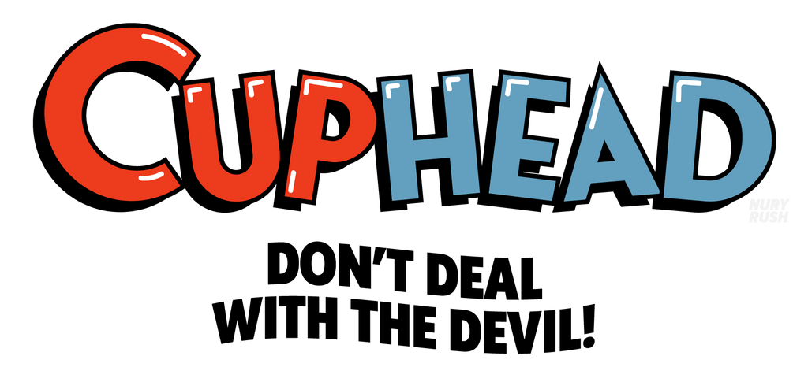

Sidequest
Participe aux qualifications en ligne, viens disputer la finale IRL !
Speedrun : Cuphead
Qualifications en ligne :
Jusqu'au 12 décembre à 23h59
Finale en présentiel :
Vendredi 13 décembre à 18h30 en BC01
Règles du speedrun
- Catégorie : Full game version 1.1+, difficulté simple any%
- Description rapide : En jouant sur un fichier vierge, terminer le jeu le plus rapidement possible en entrant dans le niveau de King Dice.
- Les run doivent respecter les règles de speedrun.com pour la catégorie correspondante
- La finale se déroulera le 13 décembre 2024 à 18h30 en BC01. Les finalistes auront 3h pour réaliser le meilleur temps possible, qui déterminera le vainqueur de la Sidequest.
Soumettre une run
- Pour être validée, une run doit être soumise sur speedrun.com dans la catégorie correspondante.
Une fois que cette dernière est vérifiée, envoyez un message sur le thread Discord approprié (ou si vous préférez par DM sur Discord (@laclimsx ou @lelewild) ou Telegram (@LaClimSx ou @lelrider)) - Si votre run n'est pas vérifiée à temps par speedrun.com, vous pouvez la poster sur YouTube en non-répertoriée et nous envoyer le lien avant le jeudi 12 décembre.
- À l'issue des qualifications, les 4 meilleurs temps seront invités à participer à la finale en présentiel.